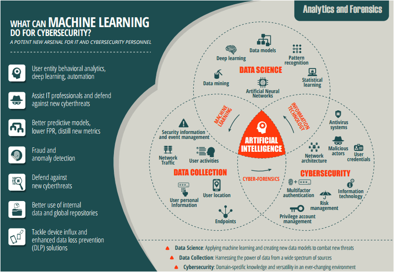

Topic information
- Category: Technological Innovations
- Posted on: 8 January, 2022
- Author: Aditya Verma
Machine learning cyber-protection
Artificial Intelligence (AI) is defined as ‘the theory and development of computer systems able to perform tasks normally requiring human intelligence’. Machine learning (ML) is a sub-field within AI. The pioneer, Arthur Samuel, promoted the term ML in 1959, as the “Field of study that gives computers the ability to learn without being explicitly programmed”.
In the Cambridge Dictionary ML is referred to as ‘The
process of computers changing the way they carry
out tasks by learning from new data, without a human being needing to give instructions in the form of a
program’. And, in the Oxford Lexico, it is used to describe ‘The use and development of computer systems
that are able to learn and adapt without following explicit instructions, by using algorithms and
statistical models to analyse and draw inferences from patterns in data’.
Generally speaking, ML
relies on mathematical models which
are built by analysing patterns in datasets.
These patterns are then used to make predictions on new input data. Similar to the way Netflix offers
recommendations for new TV series, based on previous viewing experiences, ML is one of the many
approaches to AI that uses a system that is capable of learning from experience, and builds upon what
has been learnt.
Machine Learning Misconceptions
People are often scared or apprehensive about what they do
not understand. Although ML is not a new concept for experts in the field, many are only just getting to
grips with what it is and how it can be used. Because the term ML is associated with depictions portrayed in
the media of power-hungry robots with a thirst for human destruction, many recoil at the thought of
utilizing it in business or private use. But the truth is that these portrayals are not accurate
representations, and ML is used by the majority of us, on a daily basis, without us even fully recognizing
how or where.
Examples of daily ML in action includes the use of portrait mode on your smart phone, social media feeds on
applications such as Facebook or Instagram, music and media streaming including BBC iPlayer or Netflix,
online adverts tailored to the user journey, pretty much every online game, banking apps, smart devices… the
list is endless.
From reinforcement learning, semi-supervised learning, self-learning, feature learning, sparse dictionary
learning, anomaly detection and robot learning, there are many different approaches and techniques used.
But, on the whole, machine learning can be broadly classified into two classes, known as supervised and
unsupervised learning.
Supervised Learning
Supervised Learning is where a machine learns from training
data, and maps out inputs and outputs, based on rules provided in said training data, and from inferred
functions. In Supervised Learning, the dataset is labelled, wherein there is a target variable. The value of
which the ML model learns to predict, using different algorithms. For instance, it may do this based on IP
address location, frequency of web requests and so on. From this, an ML model can then predict if the IP was
part of say a Distributed Denial-of-service (DDoS) attack, and more.
The main goal is for the machine to extract the information from the unlabelled data sets, that could aid
performance and increase productivity.
Unsupervised Learning
In Unsupervised Learning, there is no labelled data,
thereby, no prediction of a target variable. Unsupervised Learning tries to find interesting associations,
or patterns, within a dataset. For instance, clustering can be applied in user analytics where application
users can be grouped together. By doing this, it is possible to see what data should belong to a specific
group, or not.
Machine learning is about developing patterns and manipulating those patterns with algorithms. In order to
develop patterns, we need a lot of data that has complete, relevant and rich context. It is not just about
the quantity of the data, but also the quality.
Essentially, accurate and rapid security depends on the initial data collection. There are many systems out
there, buzzing away, both on-premise and on the Cloud. You need to be able to get the data from those
systems, process it, correlate, and analyse those systems. Whether via traditional Syslog, Cloud API, AWS,
Azure, Statistical Analysis Systems (SAS) services, or something else, you need to get that data, and have
it presented in a way that can be processed quickly and efficiently.
And, once you have the right logs, they need to be validated. You can start to standardise and normalise
them. Start with basic correlation. By contextualising the traffic logs against threat intelligence data,
analysts can see where risky user activity might be present. This, very quickly, moves along to advanced
analytics.
Which is why Data Cleansing is an important part of machine learning, and helps analysts make sense of the
raw data captured from multiple sources.
‘If intelligence is a cake, the bulk of the cake is unsupervised learning, the icing on the cake is supervised learning, and the cherry on the cake is reinforcement learning (RL).’ – Facebook AI Chief Yann LeCun

Applications of Machine Learning in Cyber
Security
To better understand previous cyber-attacks, and develop
respective defence responses, ML can be leveraged in various domains within Cyber Security to enhance
security processes, and make it easier for security analysts to quickly identify, prioritise, deal with and
remediate new attacks.
The following headings are just a few methods Machine Learning can be used to aid security.
Automating Tasks
A great benefit of ML in cyber security is its capacity to
automate repetitive and time-consuming tasks, such as triaging intelligence, malware analysis, network log
analysis and vulnerability assessments. By incorporating ML into the security workflow, organisations can
accomplish tasks faster, and act on and remediate threats at a rate that would not be possible with manual
human capability alone. Automating repetitive processes means that clients can up or down scale easily,
without changing the manpower needed, thus reducing costs in the process.
The method of automating practices via ML is sometimes referred to as AutoML. AutoML signifies when
repetitive tasks involved in development are automated to specifically aid the productivity of the analysts,
data scientists and developers.
Threat Detection and Classification
Machine learning algorithms are used in applications to
detect and respond to attacks. This can be achieved by analysing big data sets of security events and
identifying patterns of malicious activities. ML works so that when similar events are detected, they are
automatically dealt with by the trained ML model.
For instance, the dataset to feed a machine learning model can be created by using Indicators of Compromise
(IOCs). These can help monitor, identify, and respond to threats in real time. ML classification algorithms
can be used using IOC data sets to classify the behavior of malwares.
An example of such a use is evident in a report from Darktrace, an ML based Enterprise Immune Solution, that
claims to have prevented attacks during the WannaCry ransomware crisis. According to David Palmer, Director
of Technology at Darktrace, “Our algorithms spotted the attack within seconds in one NHS agency’s network,
and the threat was mitigated without causing any damage to that organization,” he said of the ransomware,
which infected more than 200,000 victims across 150 countries.
Phishing
Traditional phishing detection techniques alone lacks the speed and accuracy to detect and differentiate between harmless and malicious URLs. Latest ML algorithm predictive URL classification models can identify patterns that reveal malicious emails. To do this, the models are trained on features such as email headers, body-data, punctuation patterns, and more to classify and differentiate the malicious from the harmless.
WebShell
WebShell is a piece of code that is maliciously loaded into
a website to provide access to make modifications on the web root directory of the server. This allows
attackers to gain access of the database. Which, in turn, enables the bad actor to collect personal
information. By using ML, a normal shopping cart behaviour can be detected, and the model can be trained to
differentiate between normal and malicious behaviour.
The same goes for User Behaviour Analytics (UBA), which forms a supplementary layer to standard security
measures, to provide complete visibility, detect account compromises, and mitigate and detect malicious or
anomalous insider activity. By using ML algorithms, patterns of user behaviour are categorised, to
understand what constitutes normal behaviour, and to detect abnormal activity. If an unusual action is made
on a device on a given network, such as an employee login late at night, inconsistent remote access, or an
unusually high number of downloads, the action and user is given a risk score based on their activity,
patterns and time.
Network Risk Scoring
Use of quantitative measures to assign risk scores to
sections of networks, help organisations to prioritise resources. ML can be used to analyse previous
cyber-attack datasets and determine which areas of networks were mostly involved in particular attacks. This
score can help quantify the likelihood, and impact of an attack, with respect to a given network area. Thus,
helping organisations to reduce the risk of being victimized by further attacks.
When you are doing business profiling, you have to decipher what area, if compromised, is going to destroy
your business. It could be a Customer Relationship Management (CRM) system, your accounting system, or your
sales system. It’s about knowing, within your specific business environment, what area is most vulnerable.
Say, for instance, HR goes down, this may have a low risk score within your company. But if your oil trading
platform goes down, that could bring down your entire business. Every company has a different way of doing
security. And once you understand the specifics of an organisation, you know what to really protect. And if
there is a hack, you know what to prioritise.
The Future of ML
ML is a powerful tool. There is no denying that. But it is
no silver bullet. It is important to remember that, while technology is developing, and advancements in AI
and ML are evolving at a significant rate, technology is only as good, or as bad, as the minds of the
analysts controlling and using it.
There will always be bad actors developing their skills and technology to find and exploit weaknesses. Which
is why it is crucial to combine the best technology and processes with industry experts, to be able to
detect and respond to cyber threats accurately and rapidly.
To learn more about the use of Machine Learning (ML) and Artificial Intelligence (AI) within security
analytics, and to debunk some of the common misconceptions and myths surrounding what constitutes AI and ML,
view our video on ‘Using Machine Learning & AI to Hunt Risk in the Real World’ here.